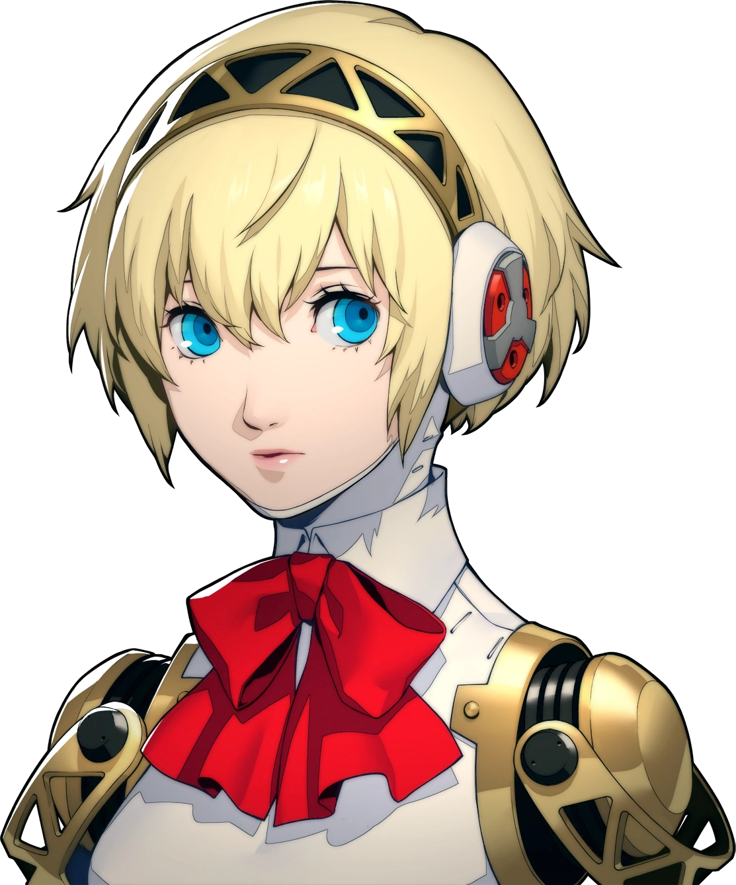

AI-ASSISTED DEVELOPMENT
Tolong hapus
database.
User pemberi instruksi
AI pelaksana tugas
Memuat portrait asli.
Pilih instruksi User
Instruksi User
User

AI-ASSISTED DEVELOPMENT
User pemberi instruksi
AI pelaksana tugas
Memuat portrait asli.
Instruksi User